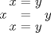
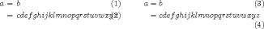
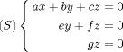
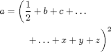

Trucs et astuces sur LaTeX
Vous trouverez ici des trucs et astuces, explications et conseils de niveaux variés concernant LaTeX et son environnement. Certains sont originaux, d'autres biens connus des spécialistes mais pas encore assez diffusés.
Avertissement : cette page n'a pas été mise à jour depuis longtemps. Le conseils donnés ici ne sont peut-être plus tous d'actualité. Vous trouverez d'autres informations, plus à jour, sur la rubrique TeX de mon blog.
Navigation : cliquer sur un titre de section ramène au sommaire.
Sommaire
- Utiliser des petites capitales grasses avec lmodern
- Être ou ne pas être en mode pdf
- Remplir manuellement les champs pdf
- Exploiter les fantômes
- Écraser verticalement des morceaux de formule
- Indices et exposants en folie
- Les huit styles mathématiques
- Trois arguments contre eqnarray
- Trois arguments contre l'usage de $$...$$
- Trouver de la documentation
- Installer des packages à la main
- Comprendre le modèle de boîtes de TeX
- (Ne pas) équilibrer ses délimiteurs
- Ne pas confondre TeX avec ses amis
- Préférer
\newcommandà\def - Bien nommer ses macros et environnements
- Définir des variantes étoilées
- Gérer astucieusement les arguments optionnels
- Comprendre
\makeatletteret\makeatother - Étoiler ses
\newcommand - Commenter ses fins de ligne
Quelques substitution de fontes utiles
La méta-famille de fontes latin modern remplace computer modern comme fontes standard. Sous LaTeX, on la charge en appelant le package lmodern. Elle souffre néanmoins pour l'instant deux défauts. Le premier est de n'être pas encore installée automatiquement dans la version de base de la plupart des distributions LaTeX. Elle est néanmoins facile à installer via le gestionnaire de paquets de votre distribution.
Le deuxième est de n'être pas encore aussi complète que computer modern : il manque par exemple les petites capitales grasses en famille romaine. L'objet de cette astuce est d'y remédier en allant chercher les fontes manquantes dans computer modern.
\rmfamily
\DeclareFontShape{T1}{lmr}{b}{sc}{<->ssub*cmr/bx/sc}{}
\DeclareFontShape{T1}{lmr}{bx}{sc}{<->ssub*cmr/bx/sc}{}
Le code précédent demande à LaTeX de substituer aux petites capitales
(sc) grasses (b) ou grasses étendues (bx) de latin modern roman (lmr) les
petites capitales grasses étendues de computer modern roman. Si vous
utilisez la variante sub au lieu de ssub, LaTeX émettra un avertissement
avant d'opérer la substitution. Enfin, le \rmfamily sert à
s'assurer que les macros qui vont être modifiées par les deux lignes
suivantes sont préalablement crées.
Remarque : cette méthode est contestable dans le sens où elle mélange allègrement deux familles de fontes. Cependant, vu la proximité entre cmr et lmr, ce mélange me paraît légitime ici, et constitue la moins mauvaise solution. Il convient de surveiller l'évolution de latin modern pour ne plus utiliser cette substitution dès qu'elle ne sera plus utile.
Connaître dynamiquement le mode de compilation
Comme vous le savez sans doute, la plupart des installations modernes utilisent le moteur pdfTeX pour toutes les compilations, y compris en mode dvi. Ce dernier fournit un moyen simple de déterminer au moment de la compilation si celle-ci a lieu en mode pdf ou dvi, afin par exemple de n'inclure que dans la version pdf certaines commandes spécifiques (voir « remplir les champs pdf » par exemple).
\ifnum\pdfoutput>0 (texte pour pdf) \else (texte pour dvi) \fi
Vous pouvez bien sûr ommettre le \else et passer
immédiatement au \fi. On rencontre parfois ce test sous la
forme \ifnum\pdfoutput=1, ce qui marche souvent en pratique,
mais le manuel de pdfTeX dit seulement que les valeurs négatives indiquent
le mode dvi sans préciser de valeur précise pour le mode pdf.
Un peu hors sujet mais pas tout à fait, sachez que certains commandes
détectent d'elle-mêmes le mode de compilation et en tirent les conclusion
appropriées. C'est le cas par exemple de la commande
\includegraphics{fichier} du package graphicx. Si vous prenez
la précaution d'écrire le nom de fichier sans extension, et que deux
versions (eps et pdf) sont trouvées, graphicx déterminera automatiquement
quel type de fichier il convient d'insérer.
Remplir les champs pdf à la main
Les champs pdf (auteur, date, etc.) peuvent être remplis facilement avec
les commandes fournies par le package hyperref (options de chargement du
package ou commande \hypersetup). Il peut arriver que vous
souhaitiez les remplir à la main, par exemple parce que vous ne souhaitez
par charger hyperref pour si peu. Cela se fait facilement avec la primitive
\pdfinfo de pdfTeX.
\ifnum\pdfoutput>0 \pdfinfo
{
/Title (Mon beau document)
/Author (Moi)
/Subject (Passionnant)
/Keywords (mots, clefs)
}
\fi
L'exemple parle de lui-même. Remarquez que par prudence on n'insère ce
code qu'en mode pdf (voir « pdf ou
pas ? »), \pdfinfo causant un warning sinon.
Remarquez aussi l'espace entre 0 et
\pdfinfo : c'est une règle générale en TeX qu'il est
prudent de laisser un espace entre un nombre et un nom de commande (autre
que \relax) car sinon TeX va chercher à voir si la commande ne
contient pas la suite du nombre, ce qui peut avoir des effets
surprenants.
Les fantômes sont vos amis
La notion de fantômes en LaTeX est très simple : il s'agit de
réserver de la place pour un objet, sans pour autant faire apparaître
l'objet en question. Les fantômes sont souvent utilisés pour ajuster
l'alignement. Ils y a trois types de fantômes obtenus respectivement par les
commandes \phantom, \hphantom, et
\vphantom.
L'exemple classique est celui de l'alignement des radicaux, illustré
ci-dessous avec \[ \sqrt{x} + \sqrt{X} + \sqrt{\vphantom{X}x}
\].
La différence est fine et sera peut-être plus facile à observer sur un pdf (ou mieux, une version imprimée), mais on constate que la composition des deux radicaux de droite est plus homogène (ils sont alignés en haut) et donc visuellement plus satisfaisante.
Pour un autre cas d'utilisation des fantômes, voir le cas des délimiteurs non équilibrés.
Les fantômes sont un cas particulier d'une notion classique en
typographie, celle de montants. En LaTeX, les montants sont obtenus en tant
que réglures dont une dimension est nulle. Par exemple,
\vphantom{X} a une action similaire à
\rule{0pt}{\heightof{X}} (\heightof est fournie
par le package calc). Il peut parfois être utile d'insérer directement une
réglure de largeur nulle et de hauteur et profondeur déterminées à la main
pour résoudre des problèmes délicats d'alignement.
Écraser verticalement des morceaux de formule
À l'inverse de l'astuce précédente qui vise à réserver de la place pour des éléments invisibles, on peut souhaiter que des éléments visibles n'occupent pas (ou moins) de place du point de vue de TeX, leur représentation graphique restant inchangée.
On réalise cela grâce à la commande smash, qui insère son argument comme
un objet de hauteur et profondeur (voir le modèle de
boîtes) nulles. Les variantes \smash[b] et
\smash[t] (fournies par amsmath) n'annulent respectivement que
la profondeur ou la hauteur.
Illustrons à nouveau ceci sur des racines avec le code suivant (utilisant
amsmath) : \[ \sqrt{y} + \sqrt{x} + \sqrt{\smash[b]{y}}
\]. Cette fois encore le phénomène est plus visible sur pdf ou
résultat imprimé.
Il convient d'utiliser ce genre de commande avec prudence car en mentant à TeX sur la taille des objets qu'il manipule, des risques de chevauchement visuels apparaissent.
Indices et exposants en folie
On a souvent envie de placer des indices ou exposants devant un symbole,
par exemple pour la transposée d'une matrice. La solution de base consiste à
placer ceux-ci sur un groupe vide, afin d'éviter qu'il n'aillent se coller
au symbole précédent. Par ailleurs, on aura parfois intérêt à ajuster
l'espace manuellement, par exemple en saisissant {}^t\!M.
Autour des opérateurs, on peut placer des indices et exposants avec la
commande \sideset d'amsmath :
\sideset{_a^b}{_c^d}\prod par exemple. Pour les autres
symboles, on peut utiliser la commande \prescript de mathtools,
qui fournit un alignement sur la droite, plus satisfaisant que celui de la
solution du groupe vide : comparer {}^{12}_3 C et
\prescript{12}{3}{C}.
Un peu en vrac dans cette section, je mentionne aussi la construction
\substack qui permet de placer plusieurs lignes d'indices sous
un opérateur, comme \sum_{\substack{(i, j) \in I^2 \\ i \neq
j}}. Il y a aussi (à ne pas confondre) \stackrel pour
placer des choses sur une flèche ou relation ( x \stackrel{f}{\mapsto}
f(x)), et pour les cas plus compliqués
\xrightarrow[bas]{haut} et ses variantes évidentes.
Enfin, on peut placer des « indices ou exposants centrés » avec
\underset{bas}{symbole} et son frère \overset.
Quelques exemples en vrac ci-dessous.
Les huit styles mathématiques
TeX, et donc LateX, possède fondamentalement quatre styles mathématiques
nommés \displaystyle, \textstyle,
\scriptstyle et \scriptscriptstyle, chacun décliné
en deux versions : normale et tassée. Il ne faut pas confondre les
styles avec les modes (en-ligne ou hors-texte) même si ceux-ci sont
reliés : le style par défaut du mode hors-texte est
\displaystyle, celui du mode en-ligne étant
\textstyle.
Ces styles déterminent de nombreux éléments de composition mathématiques, comme la taille des symboles, leur espacement, et la place des indices et exposants. On peut à tout moment changer de style par les commandes ci-dessus, qui agissent jusqu'à la fin du groupe ou jusqu'au prochain changement de style.
On contrôle indépendamment le placement des « limites » avec
\limits et \nolimits. Comparons ainsi
$\sum_a^b$, \[\sum_a^b\], $\displaystyle
\sum_a^b$, $\displaystyle \sum\nolimits_a^b$ et
$\sum\limits_a^b$.
Pour accéder manuellement à la variante tassée, on utilise la commande
\cramped de mathtools, qui compose son argument en style
tassé : cela change principalement la hauteur des indices et exposants.
Il peut être utile de les compresser, par exemple pour préserver
l'interlignage dans un paragraphe. L'effet est assez subtil, mais clair en
comparant $2^{2^2}$ à $\cramped{2^{2^2}}$.
Par ailleurs, lors de la définition d'une commande mathématique, vous
pouvez prévoir des variantes selon de style mathématique courant avec la
commande \mathchoice, qui prend 4 arguments,
correspondants aux 4 styles mathématiques. Exemple :
\newcommand\undemi{\mathchoice
{\frac{1}{2}}
{1/2}{1/2}{1/2}
}
En style \displaystyle (par exemple une équation hors-texte)
\undemi composera \frac{1}{2} et 1/2
dans tous les autres cas (par exemple une équation en-ligne ou un exposant
en mode hors-texte).
Trois arguments contre eqnarray
- Typographiquement,
eqnarrayfait n'importe quoi. Plus précisément, il rajoute beaucoup d'espacement autour du symbole de relation, de façon injustifiée et incohérente avec les autres environnements mathématiques (ci-dessousequation,eqnarraypuisalign). - Quand l'équation occupe toute la largeur de la page,
eqnarrayne s'en rend pas compte et place le numéro d'équation en surimpression sur le texte. Les autres environnements standard, commeequation, ne présentent pas ce problème et placent le tag en-dessous. (À droite, align, à gauche, eqnarray avec\setlength\arraycolsep{2pt}.) - Par ailleurs, eqnarray ne fonctionne pas correctement avec les
commandes du package amsmath, incontournable pour composer les
mathématiques. Par exemple, les commandes
\taget\intertextfonctionnent avec tous les environnements saufeqnarray.
Pour ces raisons, eqnarray doit être considéré comme
obsolète et je vous conseille de ne plus l'utiliser. Il est avantageusement
remplacé par les environnements d'amsmath, notamment align.
Trois arguments contre l'usage de $$...$$
L'usage de $$...$$ pour passer en mode mathématique hors-texte n'a jamais été supporté par LaTeX : c'est un héritage de TeX. Les héritages de TeX ne sont pas tous mauvais, mais celui-ci est à éviter pour (au moins) les raisons suivantes.
- Il ne respecte pas les mécanismes de LaTeX, comme par exemple l'option
fleqnde la classe standardarticle: cette dernière doit avoir pour effet d'aligner à gauche (au lieu de centrer) les équations hors-texte, mais les équations délimitées par$$restent obstinément centrées. - L'espacement vertical autour de l'équation est inconsistant. La plupart du temps, il sera correct, mais des comportements étranges peuvent survenir quand l'équation est précédée ou suivie de changements de paragraphes ou autres objets « complexes ».
- Enfin, tous les packages bien faits pour LaTeX supposent que vous
utilisez les constructions standard de LaTeX, et risquent donc de ne pas
fonctionner avec
$$. C'est le cas d'amsmath, et par exemple, de sa commande\tag.
Les environnement standard prévus par LaTeX pour les mathématiques
hors-texte sont displaymath, equation* et
\[...\] : le dernier n'est guère plus long à taper que
$$ et rend par ailleurs le source plus lisible.
Trouver la documentation
LaTeX, comme la plupart des systèmes ouverts et développés par ses utilisateurs, est accompagné d'une quantité impressionnante de documentation disponible en ligne. La quasi totalité des packages LaTeX est accompagnée d'une documentation spécifique, qu'il faut savoir trouver.
Selon la distribution LaTeX, une plus ou moins grande partie de cette
documentation est installée avec les packages : TeXlive installe
toujours la documentation, sous MikTeX il faut parfois le demander
spécifiquement (via le gestionnaire de packages). Cette documentation est
très facile à trouver grâce à l'outil texdoc. Par
exemple, sous TeXlive/linux, taper texdoc xcolor dans un
terminal ouvre immédiatement la documentation en pdf d'xcolor.
Cette documentation est aussi disponible en ligne sur le CTAN. Parmi les modes de recherche proposés, vous pouvez rechercher de la documentation par mots-clés ou nom de package. Vous pouvez aussi trouver des tutoriels ou documentations non spécifiques à un packages dans la section documentation du catalogue TeX en ligne.
Par ailleurs, les distributions sont aussi accompagnées de leur propre documentation, décrivant l'organisation des fichiers, les outils de bases, variables d'environnement, etc. Cette documentation se trouve sous plusieurs formes et/ou langues, par exemple aux endroits suivants (resp. TeXlive et MiKTeX).
Program Files/MiKTeX 2.5/doc/miktex/manual/index.html Program Files/MiKTeX 2.5/doc/miktex/miktex.pdf /usr/share/doc/texlive-doc/french/texlive-fr/live.html /usr/share/doc/texlive-doc/english/texlive-en/live.pdf
Installer des packages à la main (cas facile)
La plupart du temps, utilisez les mécanismes de gestion de packages de votre distribution LaTeX (et pensez à mettre à jour). Il peut cependant que vous ayez à installer à la main un package, soit pour avoir la version la plus récente, soit parce que vous n'avez pas accès au gestionnaire de packages (sur une machine où vous n'êtes pas admin).
Il faut alors savoir qu'existent sur votre machine plusieurs arborescences texmf (les répertoires où sont rangés, entre autres, les packages) : la plupart du temps, une arborescence de base, une « locale », et une « utilisateur ». Ne touchez qu'aux deux dernières. Sur une installation TeXlive/linux typique, ces arborescences sont :
/usr/share/texmf-texlive/ /usr/local/share/texmf $HOME/texmf
Ces chemins peuvent varier, et être modifiés. Leur valeur est déterminée
par des variables d'environnement que vous pouvez afficher via
texconfig conf sous TeXlive/linux. Pour en savoir plus, lisez
la documentation spécifique à votre distribution (cf. fin de « trouver la doc »).
La version simple de l'installation de package est celle où il suffit de copier les fichiers (dont le .sty) depuis le CTAN vers l'endroit approprié de votre disque dur. Vous pouvez placer les fichiers au choix dans le même répertoire que votre document en cours (peu recommandé), ou dans un sous-répertoire adéquat (typiquement tex/latex/package) de votre texmf personnel ou local.
Dans ce dernier cas, il vous faudra reconstruire la base de données des
packages avec la commande mktexlsr (alias
texhash). Vous pouvez vérifiez que votre nouveau fichier est
bien trouvé par LaTeX avec la commande kpsewhich fichier.sty
qui retourne la version qui sera effectivement utilisée dans le cas où il en
existerait plusieurs.
La version « difficile » est celle où il faut, en plus de ce
qui est expliqué ci-dessus, compiler soi-même le package et sa documentation
à partir du source .dtx. C'est assez rare, et je renvoie pour ceci à la
section 4.6 de la « Not so short » (lien
ctan, ou bien texdoc lshort).
Le modèle de boîtes de TeX (donc de LaTeX)
Pour TeX, produire un document revient à produire des listes de boîtes (contenant éventuellement d'autres boîtes) et à les placer sur la page. C'est au moment de la visualisation que les caractères sont placés dans les boîtes et que le document ressemble à ce qui était souhaité. (Remarquons d'ailleurs qu'un caractère n'est pas toujours « vraiment » contenu dans sa boîte.)
Contrairement à ce que suggère l'intuition, une TeX-boîte ne possède pas
deux, mais bien trois dimensions : une hauteur, une largeur, et une
profondeur. La troisième dimension est liée à l'existence d'une ligne de
base sans laquelle il serait difficile d'aligner les caractères. On pourrait
spécifier les trois dimensions de façon équivalente sous la forme :
largeur, hauteur totale, et décalage. C'est ce qui est fait pour certaines
commandes comme \rule et la syntaxe LaTeX manque un peu
d'homogénéité sur ce point.
Dans certaines circonstances (rotations de graphiques, minipage), on doit repérer un point verticalement et/ou horizontalement dans une boîte. Une convention courante est d'utiliser deux lettres, dont la première est t (haut), b (bas), c (centre) ou B (ligne de base) pour le positionnement vertical, et la deuxième est l (gauche), r (droite) ou c (centre) pour le positionnement horizontal.
Délimiteurs équilibrés ou non
LaTeX propose les commandes bien pratiques \left et
\right pour ajuster automatiquement la taille des délimiteurs
(parenthèses p. ex.) en fonction du contenu. La seule contrainte est
que les délimiteurs doivent être équilibrés par paire. Voyons donc trois
astuces autour de cette contrainte.
- On veut parfois utiliser une grande accolade ouvrante sans délimiteur
fermant, pour taper un système d'équations par exemple. LaTeX propose à cet
effet le délimiteur invisible «
.». Par exemple :\[ (S) \left\{ % ici on ouvre... \begin{aligned} ax + by + cz &= 0 \\ey + fz &= 0 \\ gz &= 0 \end{aligned} \right. % ...et là on ferme ! \]Pour ce genre de construction, on pourra aussi utiliser l'environnementcasesd'amsmath et ses variantesdcasesetdcases*du package mathtools. - Par ailleurs, on voudrait parfois que les délimiteurs aillent par trois
(ou plus). C'est possible avec pdftex (en mode dvi aussi bien sûr, voir
« ne pas confondre ») qui fournit la
nouvelle primitive \middle. Cette commande s'utilise exactement comme on
l'imagine :
\left\{ \frac{a}{b} \ \middle|\ a \in \mathbf{Z}, b \in \mathbf{Z} \setminus \{0\} \right\}par exemple. - Enfin, on ne peut parfois pas équilibrer les délimiteurs, par exemple
parce que leur contenu est trop long pour être écrit sur une ligne. Il faut
alors ruser en employant conjointement des délimiteurs invisibles, et si
besoin des fantômes pour ajuster la taille. Par
exemple :
\begin{align*} a &= \left( \frac{1}{2} + b + c + \ldots \right. \\ & \qquad \left. \vphantom{\frac{1}{2}} + \ldots + x + y + z \right)^2 \end{align*}
Ne pas confondre TeX, LaTeX, pdfTeX et pdfLaTeX
Il m'arrive parfois de parler des possibilités offertes par pdfTeX, et je crains que cela n'effraie les habitués de la chaîne dvi/ps. Une remarque rapide donc sur les rapports entre TeX, pdfTeX et LaTeX pour dissiper un éventuel malentendu.
La première chose à comprendre est que LaTeX n'est pas un programme
indépendant. Ce n'est qu'un (énorme) jeu de macros pour TeX. Pour utiliser
LaTeX, on pourrait en fait utiliser TeX, et commencer par lui faire lire
avant notre document (avant le \documentclass) les définitions
de centaines de macros. Pour des raisons d'efficacité, on utilise en fait un
« format », c'est-à-dire que quand on tape latex,
c'est le programme TeX qui est appelé, mais avec toutes les définitions de
LaTeX préchargées.
Sur les installations modernes, ce que je viens de dire est en fait
faux : ce n'est pas le programme TeX, mais pdfTeX qui est appelé. Ce
dernier est une version moderne de TeX, qui possède de nombreuses
fonctionnalités supplémentaires, comme la possibilité d'écrire de droite à
gauche, des fonctionnalités micro-typographiques, la capacité de créer des
liens hypertextes, quelques nouvelles primitives utiles (dont
\middle (cf délimiteurs)) et enfin la
possibilité de produire un dvi ou un pdf.
Ce dernier point justifie le nom, mais le nom prête à confusion :
répétons-le, pdftex sait très bien produire des dvi. Ce qui va déterminer le
mode de compilation, c'est le fait que vous l'appeliez avec
latex ou pdflatex. Ces deux commandes sont
respectivement équivalentes à pdftex -fmt latex test.tex et
pdftex -fmt latex -output-format pdf test.tex.
En fait, la seule commande qui lancera effectivement TeX (avec le format
plain) est la commande... tex ! Vous pouvez vous amuser à
taper latex --version pour vous convaincre du fait que c'est bien pdftex qui
travaille, même en mode dvi. Chez moi, aujourd'hui (2007-06-11), la sortie
est la suivante.
$ latex --version pdfTeX using libpoppler 3.141592-1.40.3-2.2 (Web2C 7.5.6) kpathsea version 3.5.6 [...]
Quelques explications : 3.141592 est le numéro de version actuel de TeX, sur lequel est basé pdfTeX. Le source de TeX étant écrit en Web, un langage de programmation et documentation (notion de « literate programming ») formé d'un mélange de Pascal et de TeX, il est commode pour le compiler partout de le traduire d'abord en C : c'est le travail de Web2C. Par ailleurs, pdftex intègre désormais les fonctionnalités d'une autre extension de TeX, eTeX (version 2.2), et son numéro de version actuel est le 1.40.3 restant. Enfin, kpathsea est une bibliothèque de recherche qui aide TeX à trouver rapidement ses fichiers dans vos arborescences texmf compliquées (cf « installer ses packages »).
\def vs
\newcommand
Une activité essentielle dans l'usage de (La)TeX est la définition de
macros. Pour cela, LaTeX propose des méthodes qui lui sont propres
(\newcommand, \renewcommand, etc.) en plus des
méthodes de TeX qui restent disponibles. Comme souvent, on a intérêt sauf
raison particulière à préférer les méthodes de LaTeX pour définir les
commandes.
La première raison est que LaTeX opère beaucoup d'opérations de contrôle
pour vous empêcher de tout casser par maladresse. En l'occurrence, le danger
est de redéfinir sans le savoir une commande qui existe déjà (vous ne
connaissez sans doute pas par coeur la liste des 300 primitives de TeX et
encore moins celle des commandes LaTeX). S'il s'agit d'une commande ayant un
rôle essentiel (comme \par ou \output), les
conséquences peuvent être catastrophique et difficiles à comprendre.
Pour cela, LaTeX distingue la définition d'une nouvelle commande qui se
fait avec \newcommand de la redéfinition qui se fait avec
\renewcommand. Par ailleurs, il faut savoir qu'en LaTeX il est
dangereux de définir des commandes dont le nom commence par
\end car elles sont utilisée en interne par les environnements.
Là aussi, \newcommand se charge de la vérification et vous
évite des problèmes.
Par ailleurs, une raison un peu plus personnelle de préférer
\newcommand est sa syntaxe plus simple pour la spécification du
nombre d'arguments, et en un sens plus puissante avec la possibilité de
rendre optionnel le premier argument. Concernant les arguments,
\def offre d'autres possibilités, comme les arguments
délimités, dont on a rarement besoin sauf pour des techniques un peu
avancées.
Dans les rares cas où on a vraiment besoin de \def (ou
d'autres commandes TeX comme \let ou \edef), un
usage prudent est de faire précéder la définition de la macro (par exemple
\def\macro) par un \newcommand\macro{} pour
vérifier qu'on est bien autorisé à définir \macro.
Bien nommer ses macros et environnements
La première chose chose à savoir pour nommer ses macros où environnements
est quels sont les noms autorisés. Pour les macros, ils sont de deux
types : les caractères de contrôle et les mots de contrôle. Dans un
caractère de contrôle (p. ex. \!), la contre-oblique est
suivie d'un unique caractère qui n'est pas une lettre. Dans un mot de
contrôle, la contre-oblique est suivie d'une suite de lettres et le nom de
la commande se termine au premier caractère non-lettre (typiquement un
espace ou une accolade).
TeX reconnaît les 52 caractères auxquels vous pensez comme des lettres.
En particulier, A et a sont différents, et é, @ ou 1 ne sont pas des
lettres. On peut parfois demander à TeX de changer sa notion de
lettre : voir par exemple le cas de \makeatletter.
Pour les noms d'environnements, c'est plus simple : les caractères autorisés sont les lettres et le caractère * et ce, quelle que soit la longueur. Vous pouvez essayer d'utiliser d'autres caractères comme des espaces, cela marchera sans doute. Cependant, il n'est écrit nulle part dans le manuel que ça doit marcher, donc il n'est pas certain que cela marchera encore à l'avenir et je vous conseille de ne pas le faire.
Le deuxième élément à prendre en compte est le sens du nom. Même si je
suis le premier à ne pas (toujours) suivre ce conseil, je vous encourage à
ne pas le choisir trop court : votre source gagnera en lisibilité, et
c'est sans doute plus important que d'économiser quelques frappes de
touches. Par ailleurs, choisissez toujours un nom qui se rapporte au sens de
la commande et pas à sa mise en forme (par exemple, \lebesgue
pour la mesure de Lebesgue, indépendamment du fait que vous la notiez lambda
ou autre chose).
Définir des variantes étoilées
Vous l'avez sans doute remarqué, beaucoup d'environnements ou commandes standard de LaTeX existent sous une variante étoilée. Vous pouvez avoir envie de reprendre cette idée quand vous définissez vos commandes et arguments, et j'approuve cette envie. Voyons comment la mettre en oeuvre.
Si vous avez lu l'astuce sur le nommage, vous aurez
compris que c'est immédiat pour les environnements car l'étoile est un
caractère autorisé dans les noms d'environnements. Il vous suffit donc de
faire \newenvironment{myenv} et
\newenvironment{myenv*} avec les définitions souhaitées.
Pour les commandes, c'est plus compliqué car l'étoile ne peut pas faire
partie du nom de la commande. Il y aura donc une commande, qui devra être
capable de regarder si elle est ou non suivie d'une étoile et d'adapter son
comportement en conséquence. Pour des raisons techniques, cette commande ne
pourra pas accepter d'argument, mais pourra faire appel à des commandes qui
en acceptent (voir le début de « gérer ses
arguments »). Par ailleurs, on utilise une commande interne du
noyau LaTeX et vous pouvez vous reportez à « \makeatletter » pour comprendre
pourquoi cela implique son usage.
\newcommand*\mycommandstared[1]{ciel #1 étoilé}
\newcommand*\mycommandunstared[1]{ciel #1 non étoilé}
\makeatletter
\newcommand\mycommand{\@ifstar{\mycommandstared}{\mycommandunstared}}
\makeatother
Dans cet exemple (stupide), vous pouvez alors utiliser
\mycommand comme une commande avec un argument obligatoire et
admettant une variante étoilée. Ainsi, \mycommand{bleu}
composera « ciel bleu non étoilé » tandis que
\mycommand*{nocturne} composera « ciel nocturne
étoilé ».
Gérer astucieusement ses arguments
Dans cette astuce, je suppose que vous connaissez déjà la syntaxe de
\newcommand. En particulier, vous savez sans doute qu'on ne
peut définir (au plus) qu'un argument optionnel et que celui-ci est
nécessairement le premier. L'objet de la présente astuce est de contourner,
dans certains cas, cette limitation.
Commençons par une remarque assez fondamentale sur la façon dont TeX gère les macros. D'abord, il faut bien comprendre qu'une macro n'est pas une fonction : il ne s'agit pas d'exécuter à part le code de la macro et de renvoyer un résultat, mais juste de remplacer le nom de la macro par son texte de définition. En particulier, TeX n'opère aucun contrôle sur le texte de définition d'un macro, qui peut contenir des macros non définies ou n'ayant pas le bon nombre d'arguments.
On peut alors méditer sur le cas d'une commande définie comme
\newcommand\latin{\textit}. Techniquement, elle semble être une
macro sans argument. En pratique, l'utilisateur écrira \latin{id
est} comme si la commande admettait un argument : celui-ci sera
en fait passé à \textit. Vous êtes maintenant prêts à
comprendre l'exemple suivant.
\newcommand*\xvec[1][0]{x_{#1},\ldots,\xvecint}
\newcommand*\xvecint[1][n]{x_{#1}}
\xvec % donne x_0,\ldots,x_n
\xvec[1] % donne x_1,\ldots,x_n
\xvec[1][m] % donne x_1,\ldots,x_m
\xvec[m] % donne x_m,\ldots,x_n (attention)
Deux remarques. Si le dernier argument est optionnel et que vous ne l'utilisez pas, votre commande va manger les espaces qui la suivent, soyez prudent hors du mode mathématique. Pour des traitement plus compliqués, vous devrez utiliser des définitions emboîtées pour faire circuler les arguments entre vos différentes macros internes.
Être ou ne pas être une lettre : le cas de @
Pour apprécier cette section, vous devez avoir lu le paragraphe sur les
noms de commandes. Vous savez alors qu'en temps normal,
si l'on écrit, par exemple \today@midnight, il ne s'agit pas
d'un nom de commande seul, mais de la commande \today suivie
des caractères @, m, i, etc.
Si pourtant vous lisez les sources d'un package, d'un fichier de classe, voire du noyau LaTeX, vous constaterez que beaucoup de noms de commandes y contiennent au moins un @. Il s'agit d'un convention standard de LateX (déjà utilisée par le format plain d'ailleurs) qui sert à « protéger » certaines commandes en les rendant inaccessible à l'utilisateur en temps normal.
Ceci repose que le fait qu'on peut demander à TeX de considérer @ (ou
tout autre caractère) comme une lettre si on le désire. Par défaut avec
LaTeX, @ est une lettre à l'intérieur des fichiers de style (packages) ou de
classe, et n'est pas une lettre dans les documents. Pour certains cas, vous
pouvez vouloir utiliser des commandes internes. Il faut alors auparavant
dire à TeX de considérer @ comme une lettre avec la commande explicite
\makeatletter, et ne pas oublier ensuite de rétablir l'ordre
naturel des choses par la commande \makeatother.
Pour un exemple d'utilisation, voir « version étoilée ».
Étoiler ses
\newcommand
Une astuce qui ne changera rien à vos documents, mais rendra votre code plus robuste en vous permettant de mieux localiser les erreurs. Une des erreurs les plus courantes en tapant un document LaTeX est de mal équilibrer les accolades : en particulier d'oublier l'accolade fermante à la fin de l'argument d'une macro.
Dans un cas pareil, si rien n'est prévu, TeX lira votre fichier jusqu'à
la fin avant de comprendre qu'il y a une erreur et ne pourra rien faire.
Pour éviter cela, Knuth (le créateur de TeX), a prévu de distinguer deux
types de macros, courtes ou longues, selon que leurs arguments peuvent ou
non contenir un changement de paragraphe. Pour une raison qui m'échappe, par
défaut, \newcommand définit des macros longues.
En utilisant \newcommand* pour définir votre commande, vous
en faites une macro courte, ce qui est largement préférable dans la plupart
des cas : ainsi, les erreurs dues à un éventuel oubli d'accolade
fermante seront circonscrites à un paragraphe. En cas de problème, TeX s'en
rendra compte à la fin du paragraphe (et non du document), il pourra vous
signaler facilement l'emplacement de l'erreur et composer le reste du
document comme si de rien n'était.
Prenez donc l'habitude d'utiliser la plupart du temps les versions
étoilés de \newcommand et \renewcommand (sauf bien
sûr dans des cas particuliers), cela vous épargnera quelques désagréments.
(Vous pouvez vous amuser à vérifier que je suis ce conseil sur tous les
exemples présentés sur cette page.)
Commenter ses fins de ligne
Une autre astuce un peu technique qui peut vous épargner bien des désagréments. Comme vous le savez peut-être, quand TeX lit votre document, il traduit chaque fin de ligne en espace. La plupart du temps (quand vous saisissez le texte d'un paragraphe sur plusieurs lignes par exemple), c'est exactement le comportement qu'il faut pour vous simplifier la vie.
Il y a d'autres circonstances où ce comportement peut être gênant. Notamment, quand vous définissez une macro un peu longue, ou que vous faites quelque chose de compliqué, vous pouvez avoir envie de présenter votre code de façon aérée sur plusieurs lignes (et indenté) pour le rendre plus lisible, comme dans l'exemple suivant.
\def\@protected@testopt#1{%
\ifx\protect\@typeset@protect
\expandafter\@testopt
\else
\@x@protect#1%
\fi}
Dans ces circonstances, vous ne voulez pas que les retours à la ligne
purement liés à l'esthétique de votre code introduisent des espaces dans
votre document quand votre macro sera utilisée au milieu du texte. Pour
cela, prenez l'habitude d'insérer un caractère de commentaire
« % » à la fin de la ligne (ce qu'on appelle souvent
« commenter ses fins de ligne »).
Vous n'êtes pas obligé de commenter les fins de ligne qui suivent un mot de contrôle car, vous le savez (cf noms des macros ), les espaces sont ignorés après un mot de contrôle. Vous n'avez pas non plus besoin de commenter la fin de ligne après un chiffre qui n'est pas une spécification d'argument, car, je l'ai déjà évoqué, il est prudent de faire suivre les nombres (sauf spécification d'argument) d'un espace qui sert à les terminer, et est donc avalé par TeX comme l'espace qui termine un mot de contrôle.
Pour vous convaincre que je ne raconte pas de bêtises, que les fins de lignes introduisent bien des espaces que vous de désirez peut-être pas, et qu'on les évite facilement en commentant ses fins de lignes, je vous propose de regarder l'exemple suivant.
\fbox{
Du texte.
}
\quad
\fbox{%
Du texte.%
}
Prenez donc l'habitude de systématiquement commenter les fins de lignes qui le nécessitent quand vous écrivez des macros ou que vous présentez du code sur plusieurs lignes. Ceci vous épargnera des désagréments qui peuvent aller bien au-delà d'un espace en trop dans votre document.